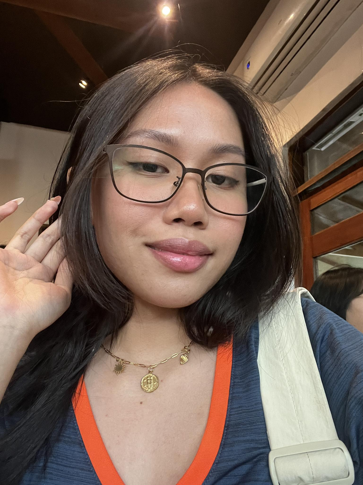

Juliana Amorsolo

Summary
I am a determined and willing student- learning different skill sets for my improvement.
Education
- Highschool
- (2017-2023) Santa Rosa Science and Technology High School
- College
- (2023-2027) Manila Tytana Colleges: Bachelor of Science in Nursing
Work Experience
Skills
- SEO Research: ⭐️⭐️⭐️
- Graphic Designing: ⭐️⭐️⭐️⭐️
Certifications and Awards
Highschool
- High honors
- Conduct Awardee
College
Others